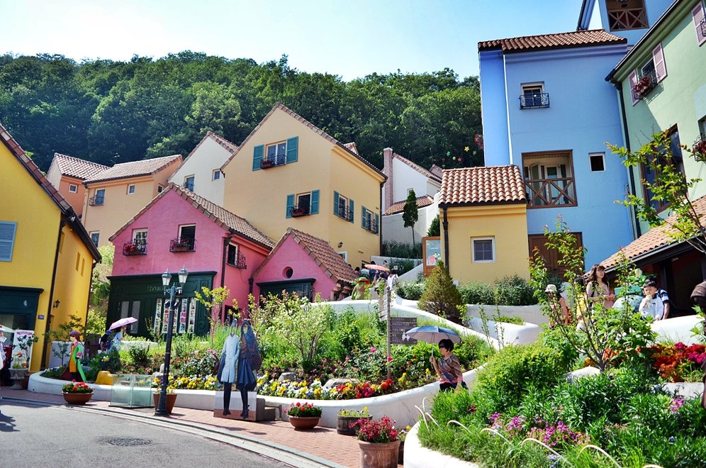

쁘띠프랑스
가평에서는 다른 나라의 문화를 체험 해 볼 수도 있는데
'쁘띠프랑스'는 우리나라 안에서 프랑스를 비롯한 유럽의 다양한 문화체험과 공연을 즐길 수 있는 프랑스 테마파크라고 합니다.
이곳은 베토벤 바이러스, 시크릿 가든 등 굵직굵직한 드라마의 촬영지로 알려진 곳이다.
언덕 위에 조성된 프랑스식 마을은 한국 속 프랑스라 불러도 될 만큼 낭만적이다.
게다가 종종 프랑스 가수의 샹송 공연을 들을 수 있고, 외국에서 건너온 기념품을 구입할 수도 있다.